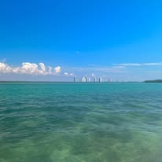
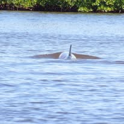
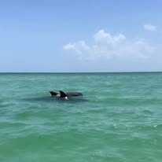

Gallery





Community-driven water quality monitoring for Fort Myers Beach estuaries.
What’s in the Water is a bi-annual citizen science initiative based on Fort Myers Beach, dedicated to improving community understanding of local water quality. Since 2019, the program has brought together volunteers from across the community to help collect water samples from 46 sites throughout the island.
The project is designed to make environmental data more accessible and locally relevant, while also increasing public awareness about the health of surrounding waters. Participants play an active role in the scientific process by assisting with field sampling alongside project organizers.
In previous years, the program has been hosted in partnership with Mound House. In 2026, it is supported through grant funding from the Fort Myers Beach Chamber Water Foundation and will be based out of the Fort Myers Beach Chamber of Commerce for the upcoming sampling event on Saturday, September 12th.
This effort is made possible through community involvement, and volunteers of all experience levels are welcome to participate in supporting local water quality monitoring and stewardship.
Interactive Google Earth Sampling Network
Open MapSaturday, September 12, 2026
Register to Volunteer


Email: nweigold@fgcu.edu
Office: 239-745-4703